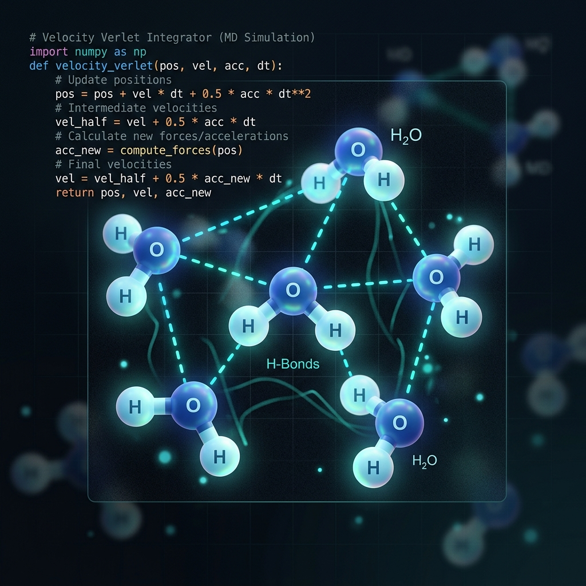

Interactive Jupyter Book
Molecular Dynamics Tutorial for Beginners
An interactive, module-based Jupyter Book guiding beginners through classical molecular simulations. Write toy molecular dynamics codes in Python from scratch—starting from Verlet integration and equations of motion, up to multi-atom structures with live visual outputs and LaTeX math formatting.
More Details
- Module-Based Learning: Starts with basic physical formulations (Verlet integration, equations of motion) and scales to multi-atom structures.
- Hands-On Coding: Contains structured Python notebooks where students write toy molecular dynamics codes from scratch.
- Interactive Elements: Incorporates math formatting (MathJax), parameter controls, and live visual output.